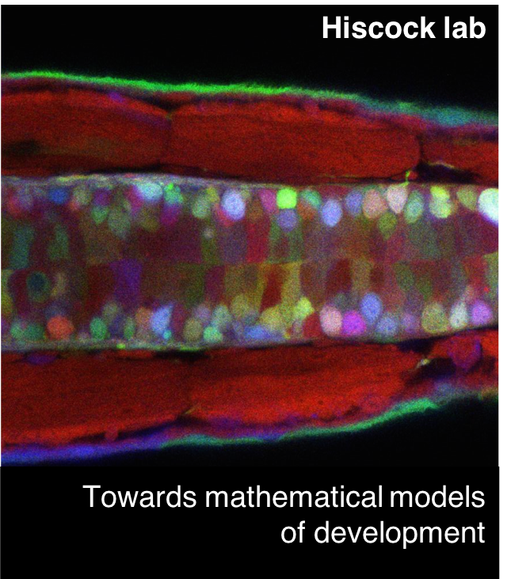
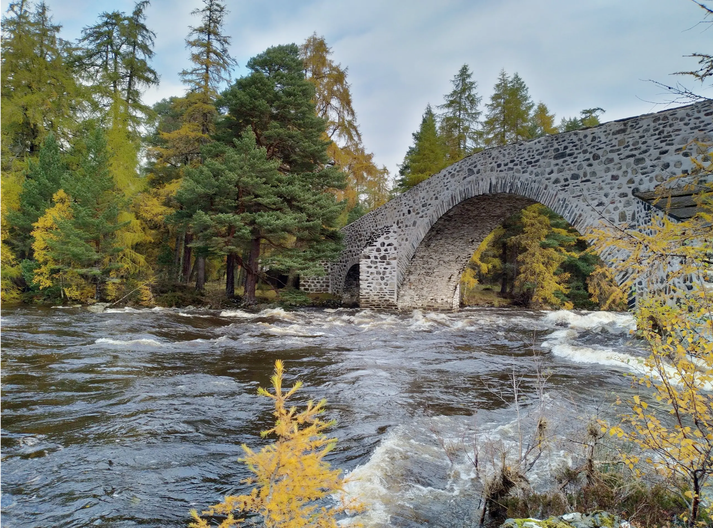
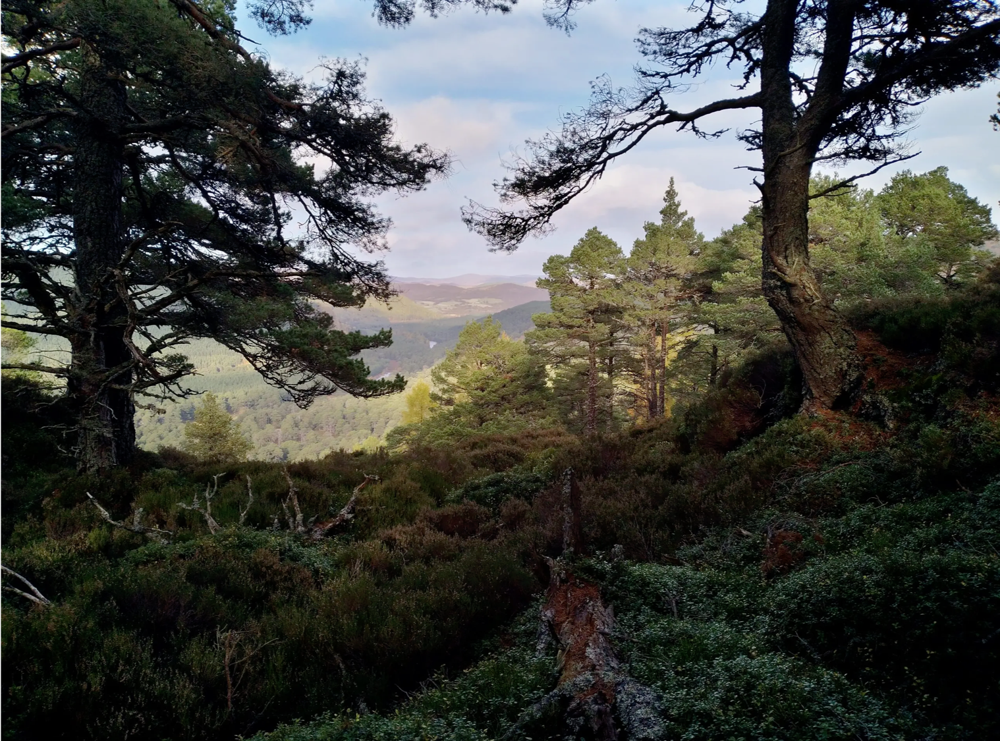

We use mathematical models, computational data analysis and close collaborations with experimentalists to understand development - the remarkable processes that allow single-cell embryos to develop into complex, functional and diverse adult forms. We are based at the Institute for Medical Sciences, University of Aberdeen.
Research in the group aims to understand how spatial organisation (patterns, shapes, forms) self-organize in developing embryos. Our guiding motivation is that, whilst decades of developmental biology has uncovered many essential molecular and cellular players, how these co-ordinately self-assemble into patterned organs and tissues remains much less well understood. Our approach is to develop mathematical models of developmental processes to bridge this gap. We hope not only to understand something new about how embryos develop, but also more generally about the spatiotemporal dynamics of complex self-organising systems. We adapt existing theoretical frameworks where applicable, and formulate our own when the biology demands it.
As theorists, we are privileged to be able to work on a wide range of problems and with a wide range of people. Some of the projects in the lab are primarily theoretical in nature, whereas others focus on one biological system in detail in collaboration with experimentalists. Some current topics include: generalised Turing patterns and reaction-diffusion systems; cartilage patterning in the airways; joint and cartilage patterns in the developing limbs; self-organization of morphogen gradients in organoid systems. Our current collaborators include: Patrick Tschopp (University of Basel); Ben Steventon (University of Cambridge); Cliff Tabin and Evan Kingsley (Harvard University); Erik Clark (University of Cambridge); Vicky Sleight (University of Aberdeen). To find up-to-date information on our current projects and interests, please check out our papers or get in touch directly.
Tom Hiscock, Group Leader
Daniel Muzatko, PhD student
Do Hyeon Gim, PhD student
Bijoy Daga, postdoc
Aberdeen Developmental Biology Group
Students/postdocs
Undergrad/masters thesis project students
I am hoping to build a talented and diverse research team that shares my aspirations for scientific rigour, my curiosity about how embryos develop and a desire to work with generosity and kindness towards each other. Please get in touch via my email below to talk about opportunities.
PhD students
There are a number of upcoming opportunities for PhD positions (e.g. EASTBIO studentships ). Please email me if you are interested in understanding the wonders of embryo development using computational methods! I'd be happy to discuss if this is a good fit.
Postdocs
I do not currently have any funded postdoc positions to advertise, however I am always applying for more funding, so please get in touch if you are interested.
Independent fellowships
I would be happy to support applications for independent postdoctoral fellowships on a range of topics. If your research vision could benefit from my input, then please get in touch and we can discuss next steps.
Some possible opportunities include: EMBO Long Term Fellowships, Newton International Fellowships, Sir Henry Wellcome Postdoctoral Fellowships, Royal Commission for the Exhibition of 1851, Marie Skłodowska-Curie Fellowships, Human Frontier Science Program, Leverhulme Trust Early Career Fellowships.
Undergraduate students
If you are an undergraduate looking for an interesting summer research project, please get in touch! BSDB offers summer studentships.
I have never tried metal detecting*. But I think it is such a wonderful metaphor for being a researcher. Like metal detectorists, we are searching for treasure. Sometimes we'll have a good idea of where we should look; othertimes we will happen upon something valuable when we least expect it. Most of the time, we will find something that has been seen many times before (e.g., a crumpled coke can). But spend enough time searching, and we may find something truly surprising (e.g., a Roman mosaic). It's this unpredictability that gives research this addictive and thrilling sense of adventure. But it's also this unpredictability that challenges us, personally and professionally. We cannot guarantee, no matter how hard we try, that we'll find something interesting - or, more specifically, something that everyone else finds interesting! So, like a happy band of metal detectorists scanning a meadow on a Summer's evening, all we can do is focus on the tasks at hand - searching systematically, exploring new fields, turning over un-turned stones. And, along the way, building friendships and supportive communities with people from all walks of life who are also walking this exciting but frustrating path of discovery. In my group, we try to celebrate not just the rare occasions when we find treasure, but all the good time and effort we have spent looking for it and supporting each other while we do so.
*This has been inspired by a recent BBC comedy "The Detectorists", with this rather pleasant song by Johnny Flynn.
I originally trained as a physicist at the University of Cambridge, before setting off across the Atlantic to do my PhD at Harvard Medical School. In Sean Megason's lab, I fell in love with embryos, and spent the best part of six years watching them develop under a microscope. In my postdoc, supervised by John Marioni and Ben Simons at the University of Cambridge, I worked on several projects combining my training in physics with my love for developmental biology. In Summer 2020, I started as a Lecturer in Systems Biology at the Institute for Medical Sciences, University of Aberdeen. My group is embedded within the strong developmental biology hub at the IMS, and benefits from proximity to the wonderful wildlife, mountains and scenery that Northeast Scotland has to offer.
You can contact me at: thomas.hiscock@abdn.ac.uk
 
Images of the beautiful autumn leaves just outside Aberdeen, October 2020.